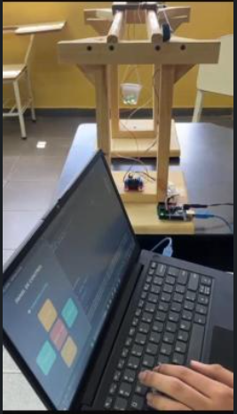

Plataforma de Optimización Logística
Backend desarrollado con Python y PostgreSQL para el control de inventario y distribución corporativa. Permite trazabilidad precisa y gestión óptima de recursos.
Hola, soy
Construyendo arquitecturas sólidas y optimizando procesos empresariales mediante código limpio y eficiente.
T.S.U. en Informática y Desarrollador Backend apasionado por la creación de sistemas robustos y eficientes. Mi enfoque se centra en la optimización de procesos mediante código limpio y soluciones tecnológicas innovadoras, aprovechando mis conocimientos en Python, PHP (Laravel), C++ y SQL para el desarrollo de aplicaciones complejas y sistemas integrales.
// CÓDIGO LIMPIO • ALTO RENDIMIENTO • ESCALABLE
Backend desarrollado con Python y PostgreSQL para el control de inventario y distribución corporativa. Permite trazabilidad precisa y gestión óptima de recursos.
Aplicación de escritorio robusta con más de 15 módulos y arquitectura Cliente-Servidor local usando Python y PyQt6. Diseñada para alto rendimiento y escalabilidad en instituciones educativas.
Aplicación web estructurada bajo el patrón MVC, desarrollada con el framework Laravel (PHP) y base de datos MySQL. Facilita la administración de historiales y horarios clínicos.

Diseño de lógica de control automatizado integrando hardware y software con C++ y Arduino para la manipulación precisa de cargas en entornos industriales.
Desarrollo de un sistema administrativo integral para la empresa Inversiones Montañazul, optimizando la gestión de inventarios y reportes financieros.
Creación de un sistema de gestión académica con +15 módulos para el control de notas y registros estudiantiles en un liceo local.
Implementación de una plataforma web para la gestión de turnos médicos bajo arquitectura MVC.
Comienzo de formación técnica superior enfocada en lógica de programación, bases de datos y redes de computadoras.
Atención directa al público y manejo de inventarios, desarrollando alta capacidad de organización y resolución de problemas.
Graduación de Bachillerato. Base académica sólida que sentó las bases de mi camino profesional en tecnología.